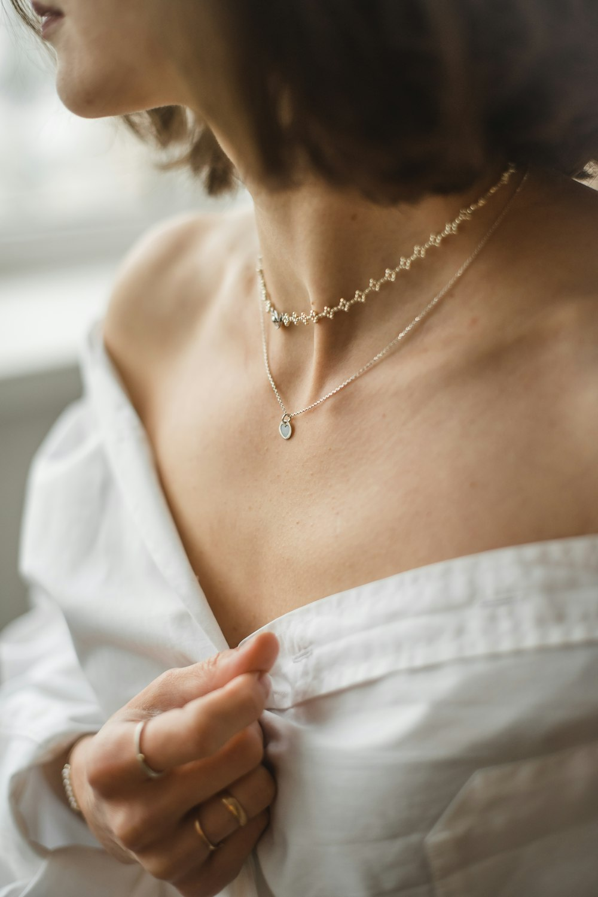
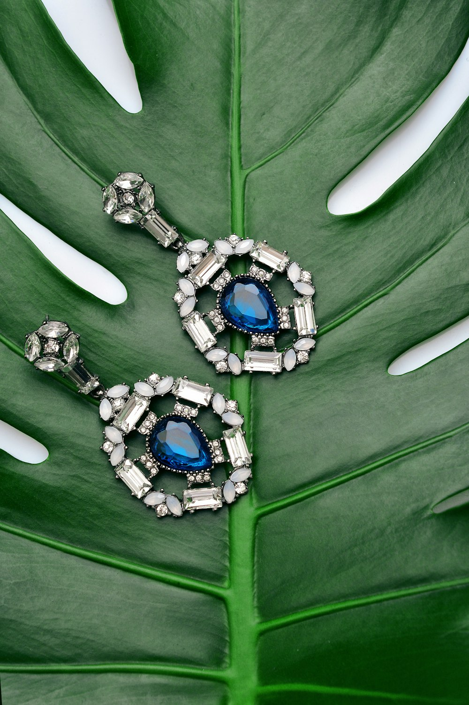
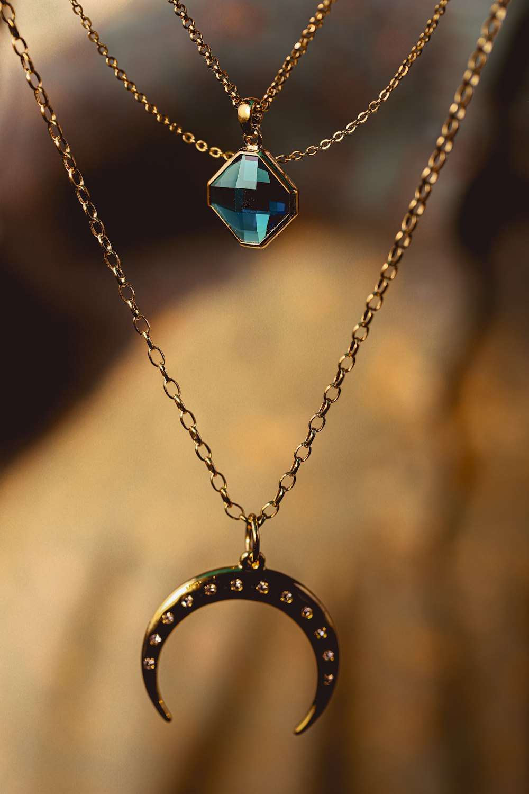

míabelle
Crochet & clay, made by hand.
Soft fiber loops and colorful clay beads — jewelry from Mia Johnson in Logan, Utah.
The pieces
Small-batch crochet jewelry and clay-bead strands — each one finished by hand.



Made in Logan
Míabelle is Mia Johnson’s handmade jewelry practice — crochet forms and clay beads shaped slowly at home in Logan, Utah. Every piece is meant to feel personal, colorful, and worn often.
Custom orders welcome
Tell Mia what colors and styles you’re dreaming of. She’ll reply with availability and timing.
Email to orderLogan, Utah · handmade to order